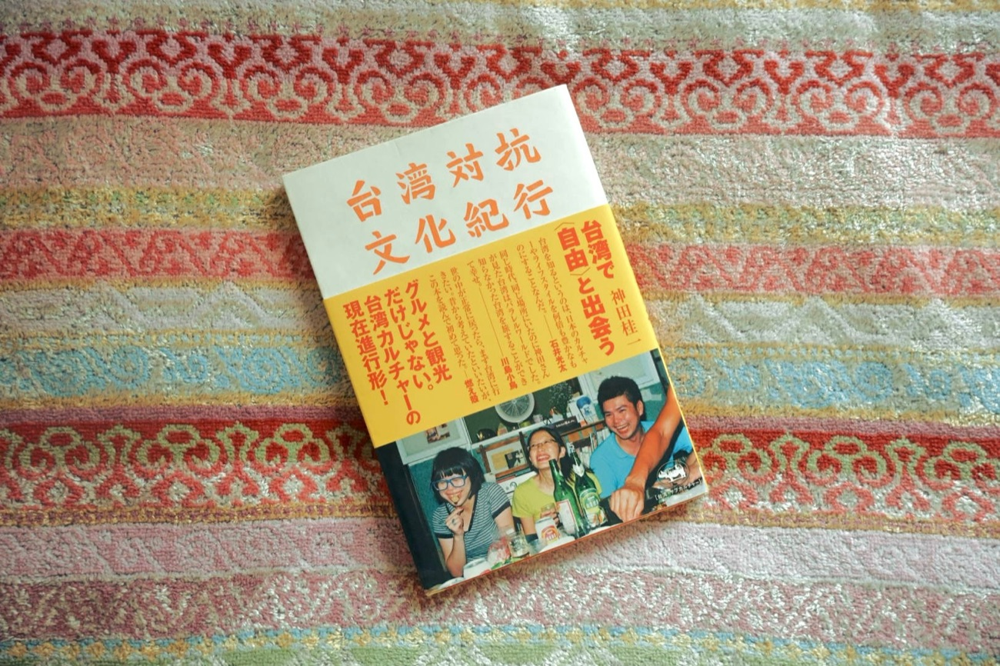

The Story
1冊の本が、台湾行きを決めた。一本書，帶我去了台灣

西浦が出会ったのは、神田桂一さんの『台湾対抗文化紀行』。飾らない台湾と、そこで暮らす人たちの姿が描かれていました。読み終えたその日のうちに台湾行きを決め、翌日には航空券を取っていたといいます。
現地の方に教えてもらった若者の集まる小さな店には、日本のアーティストのレコードやフライヤー、グッズが並んでいました。海を越えた別の土地に見えても、いまを生きる若者の感覚には、確かに通じ合うものがある。
今度は私たちが、誰かにとっての「あの1冊」になりたい。
熊本から台湾へ。台湾から熊本へ。この一冊が、人と土地をゆるやかにつなぐ入口になりますように。